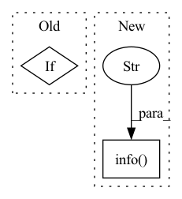

Pattern ID :1297
Before Change
sparsity,
)
if verbose:
print("..Running VAE using the following param set:")
print("......denoised count type: ", feature_type)
print("......count model: ", count_model)
print("......num_input_feature: ", n_features)After Change
vae_logger = get_logger("VAE", verbose=verbose)
vae_logger.info("Running VAE using the following param set:")
vae_logger.info(f"...denoised count type: {feature_type}" )
vae_logger.info(f"...count model: {count_model}")
vae_logger.info(f"...num_input_feature: {n_features:d}")
vae_logger.info(f"...NN_layer1: {nn_layer1:d}")
vae_logger.info(f"...NN_layer2: {nn_layer2:d}")In pattern: SUPERPATTERN
Frequency: 3
Non-data size: 2
Instances Fragment ID: 3506199
Project Name: novartis/scar
Commit Name: f8432f3aff8e3a1d6489be806ee93dd695029e4c
Time: 2023-05-01
Author: 43896555+CaibinSh@users.noreply.github.com
File Name: scar/main/_vae.py
M Class Name: VAE
N Class Name: VAE
M Method Name: __init__(10)
N Method Name: __init__(10)
M Parent Class: nn.Module
N Parent Class: nn.Module
M File Name: scar/main/_vae.py
N File Name: scar/main/_vae.py
M Start Line: 72
M End Line: 98
N Start Line: 96
N End Line: 106
Before Change
check_anchor_order(m) // must be in pixel-space (not grid-space)
m.anchors /= m.stride.view(-1, 1, 1)
self.stride = m.stride
if m.decoupled:
LOGGER.info("decoupled done")
pass
else:
self._initialize_biases() // only run onceAfter Change
self._initialize_biases() // only run once
LOGGER.info("initialize_biases done")
except :
LOGGER.info("decoupled no biase " )
// Init weights, biases
initialize_weights(self) Fragment ID: 3506208
Project Name: positive666/yolov5_research
Commit Name: d2681ade05d2847f76d0156a293eb5a3a42995d9
Time: 2022-06-07
Author: 286040359@qq.com
File Name: models/yolo.py
M Class Name: Model
N Class Name: Model
M Method Name: __init__(5)
N Method Name: __init__(5)
M Parent Class: nn.Module
N Parent Class: nn.Module
M File Name: models/yolo.py
N File Name: models/yolo.py
M Start Line: 182
M End Line: 197
N Start Line: 236
N End Line: 256
Before Change
self.mlp = GPT2MLP(inner_dim, config)
adapter_dict = {}
if self.use_adapters:
for key, value in self.domain_dict:
adapter_dict[key] = Adapter(config)
self.adapter_dict = adapter_dict
After Change
adapter_list.append(Adapter(config))
self.adapter_module = nn.ModuleList(adapter_list)
logger.info(f"I was given a tree with {len(self.domain_dict.keys())} nodes and I initialized {len(adapter_list)} adapters!" )
def forward(
self,
hidden_states, Fragment ID: 3506207
Project Name: alexandra-chron/hierarchical-domain-adaptation
Commit Name: d7af68e8dab4cedbe21346e2bf8ef39853a6194f
Time: 2021-07-29
Author: alexandra.xron@gmail.com
File Name: models/modeling_gpt2.py
M Class Name: GPT2Block
N Class Name: GPT2Block
M Method Name: __init__(2)
N Method Name: __init__(2)
M Parent Class: nn.Module
N Parent Class: nn.Module
M File Name: models/modeling_gpt2.py
N File Name: models/modeling_gpt2.py
M Start Line: 325
M End Line: 338
N Start Line: 324
N End Line: 340